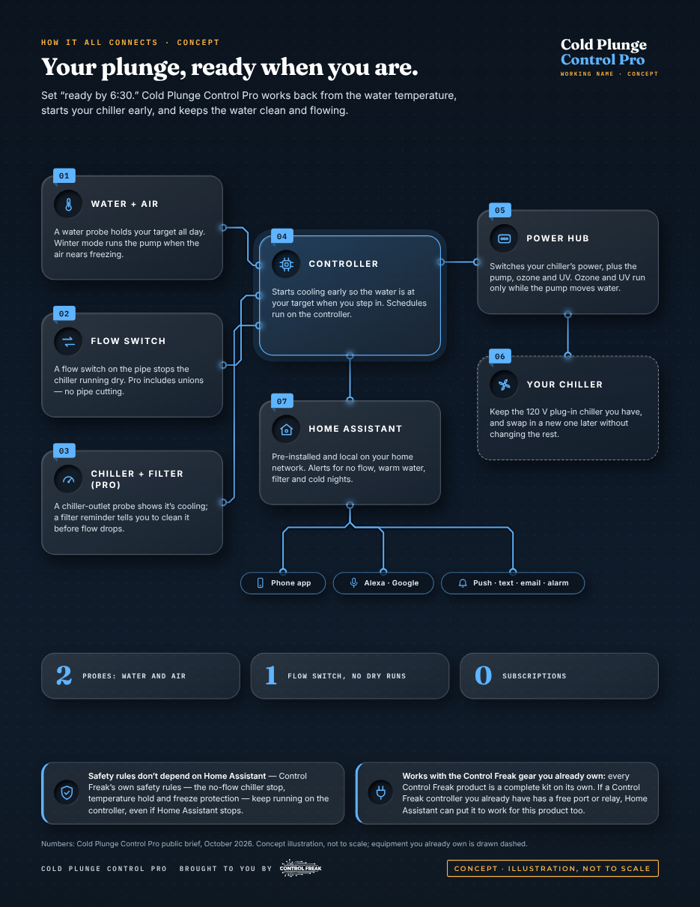

How many apps do you have to open to control your smart products?
Cold Plunge Control Pro ships with Home Assistant and the Control Freak integration already set up, so your plunge and the rest of your smart home meet in one place. Connect the apps and devices you already own and simplify to a single app. Multi-platform integration built in: ask Alexa what the status is, tell Google to adjust the temperature, and receive automated voice alerts to let you know when something is out of balance. Alerts reach you by push, text, email or alarm — including when you’re away. Home Assistant stays on your home network.
Sit back — the plunge is ready when you are.
For owners of a tub plus a separate plug-in chiller — stock-tank, barrel or chest plunges — who want the water at temperature on schedule, without babysitting a thermostat. Hot/cold tub owners who switch between a warm soak and a cold plunge, and Home Assistant users who want local control of their chiller. Self-install: plug in, drop in the probes, fit the flow switch with the included unions (no pipe cutting), scan the QR code.
What makes it different
Ready when you are
Set “ready by 6:30”; the controller starts cooling early so the water is at your target when you step in.
Holds your temperature
A water probe keeps the plunge at the target you set, all day.
Works with the chiller you have
Switches your plug-in chiller’s power from the Power Hub. Keep your chiller, swap in a new one later without changing the rest.
Chiller only runs with water flowing
A flow switch on the pipe stops the chiller running dry.
Clean water on a schedule
Ozone and UV run only while the pump moves water; filtration cycles keep it clear without the pump running all day.
Filter reminder
Tells you to clean the filter before flow drops.
Chiller health
A probe on the chiller outlet shows it’s cooling, and flags early if it slows down.
Hot and cold in one tub
A heater outlet switches between a warm soak and a cold plunge on a schedule.
Winter mode
The pump runs when the air nears freezing, protecting outdoor tubs and pipes.
Keeps working when the internet doesn’t
Schedules run on the controller. Ethernet, Wi-Fi, and its own Wi-Fi network.
What’s in Cold Plunge Control Pro
- Controller with Home Assistant + Control Freak integration
- Power Hub — labelled outlets for chiller, pump, ozone, heater and a spare
- Water and air temperature probes
- Flow switch
- Chiller-outlet probe (chiller health)
- Filter pressure sender (filter reminder)
- Plumbing unions — fits without cutting pipes
- Keyed, colour-coded cables
Your tub, chiller, pump, ozone and UV aren’t in the box — you keep the ones you have.
Pro first, Starter later
Pro is building now. A Starter kit (controller, Power Hub, water and air probes, flow switch) is coming later.
What it isn’t: it switches your chiller’s power — it doesn’t set your chiller’s own temperature, and it isn’t promised for every chiller. No health claims, no subscription, and Home Assistant never runs in the cloud. Building a tub or chiller? Ask about the OEM board.
Your plunge, and every smart thing in your home, in one app.
Cold Plunge Control Pro comes with Home Assistant already installed and the Control Freak integration already connected. You get everything people love about it, without the setup. Just plug it in.
One app. No more app juggling.
How many apps do you open today? Home Assistant puts your plunge and the rest of your smart home in one place, so you have one app to check and one to control.
Your brands finally work together
Home Assistant works with over 1,000 brands through 1,500+ integrations. Lights, plugs, thermostats, locks, speakers and cameras you already own can finally talk to each other.
Works when the internet doesn’t
It runs on the controller on your home network, not in someone else’s cloud, so it responds fast and keeps working when the internet doesn’t. Your data stays home.
Ask, don’t open
Ask Alexa what the status is, tell Google to adjust the temperature, or use Siri through HomeKit, and get automated voice alerts when something is out of balance.
Peace of mind, all over the house
Anything your plunge knows can set off something else: lights, speakers, thermostats and alerts on every phone. A few ideas are below.
Yours to keep
Your setup lives in your home, not on a company’s server. Home Assistant is free and open source, and Control Freak adds no subscription.
Safety rules don’t depend on Home Assistant — Control Freak’s own safety rules — the no-flow chiller stop, temperature hold and freeze protection — keep running on the controller, even if Home Assistant stops.
Works with the Control Freak gear you already own: every Control Freak product is a complete kit on its own. If a Control Freak controller you already have has a free port or relay, Home Assistant can put it to work for this product too.
Ideas you can build in Home Assistant · examples with your own devices
Alarm set for 6:00
Ready-by follows your morning: the water is at target by 6:30.
“Alexa, is the plunge ready?”
Hear the water temperature before you head outside.
Out of the plunge
The bathroom floor heat comes on, so you warm up after.
Home Assistant figures: home-assistant.io, October 2026. Home Assistant is a trademark of the Open Home Foundation. Your lights, speakers and thermostat aren’t in the box. Concept · example automations.
Ready when you are, from one controller.
Keep your tub, chiller, pump, ozone and UV. The Power Hub switches their power, and the probes and flow switch watch the water — so you just step in.

- Water and air probesHolds your temperature, all day. Winter mode runs the pump when the air nears freezing.
- Flow switchThe chiller only runs with water flowing.
- Chiller-outlet probe (Pro)Shows the chiller is cooling, and flags early if it slows down.
- Filter pressure sender (Pro)Tells you to clean the filter before flow drops.
- Power HubSwitches your chiller’s power. Ozone and UV run only while the pump moves water. Heater outlet for hot/cold tubs (Pro).
- Home Assistant, pre-installedAlerts by push, text, email and alarm. Ask Alexa if the plunge is ready.
Try the home screen
Change the ready-by time, clog the filter, try a cold night, switch hot/cold, or preview a sample alert.
This is a marketing simulation with example data — not live hardware and not the real app. No login, no cloud.
Join the beta
We’re looking for cold plunge owners to test Cold Plunge Control Pro at home before launch.
Join the betaPrice to be announced.